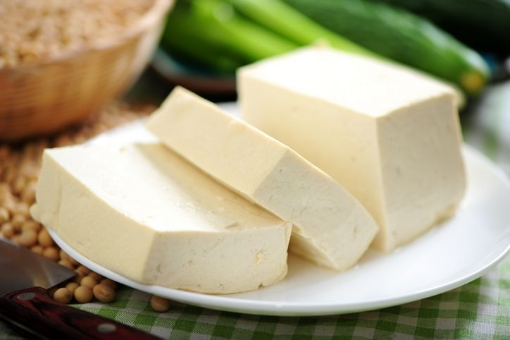
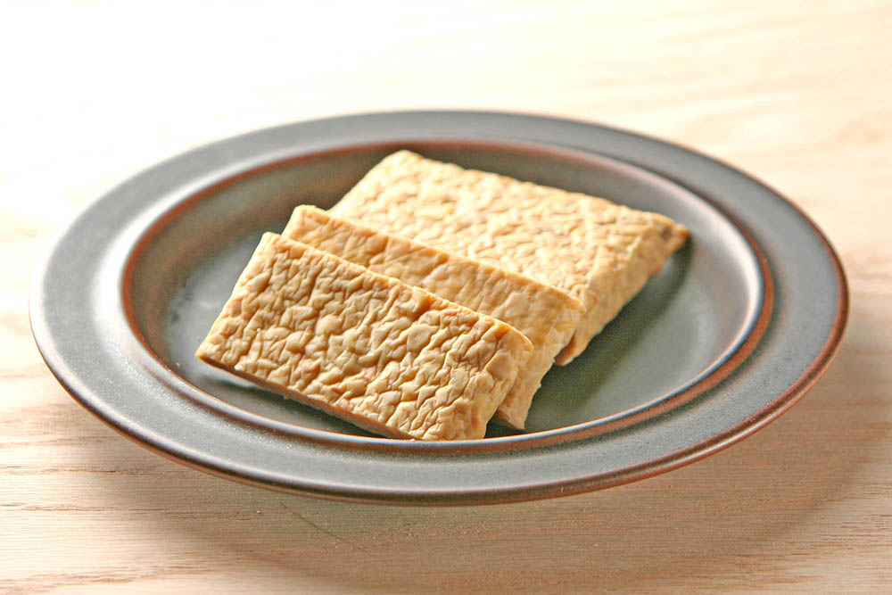
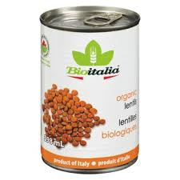

Bienvenue sur mon site
Mes meilleures recettes végé avec le tofu, le tempeh et les lentilles

Voici des sites que j'utilise souvent pour faire des recettes avec ces ingrédients :
Voici une recette que je n'ai vraiment pas aimée :
Voici une recette gagnante pour grignoter :
Pois chiches rôtis BBQ
Voici une super recette de tartinade choco-noisette maison :
À essayer absolument!
Ces recettes vous plairont lors de votre goûter pendant vos prochaines excursions en montagnes ou pendant votre prochain voyage! Comme notre amie Mimi, qui adore ma tartinade!
Ces recettes sont aussi approuvées par notre vedette maison, Galette!